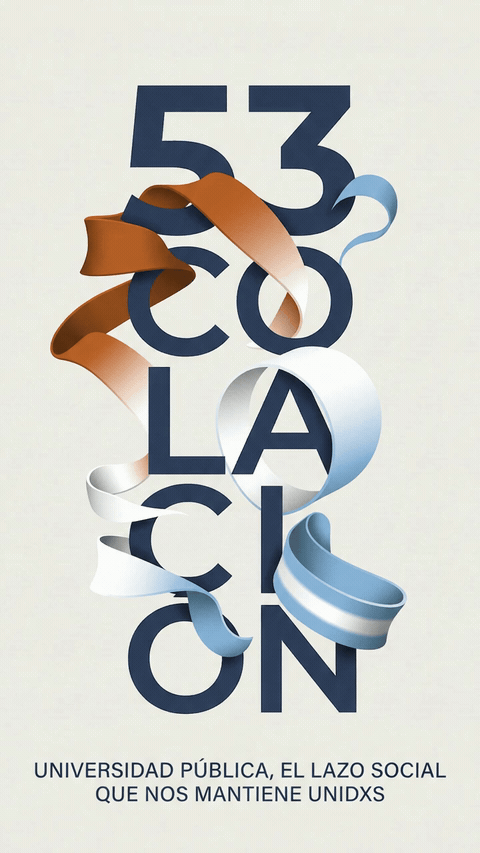

53ª Colación de Pregrado, Grado y Posgrado

PROMOCIÓN 2025 — 2026
Explorá las secciones o buscá en la nómina.
Cargando la guía…
No encontramos coincidencias.
Probá con un apellido, otro nombre o el nombre de la carrera.
Nómina de la promoción 2025–2026, según el expediente de la LIII Colación. Los nombres se presentan en orden alfabético por apellido.
FACULTAD DE CIENCIAS POLÍTICAS Y SOCIALES · UNCUYO